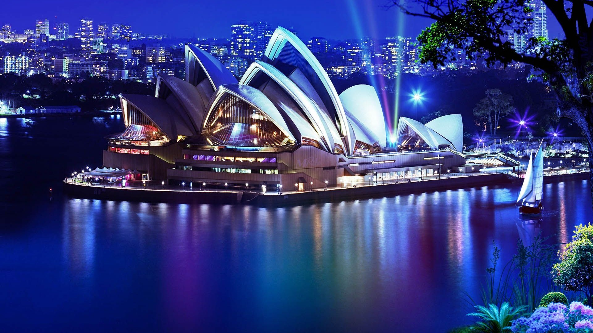
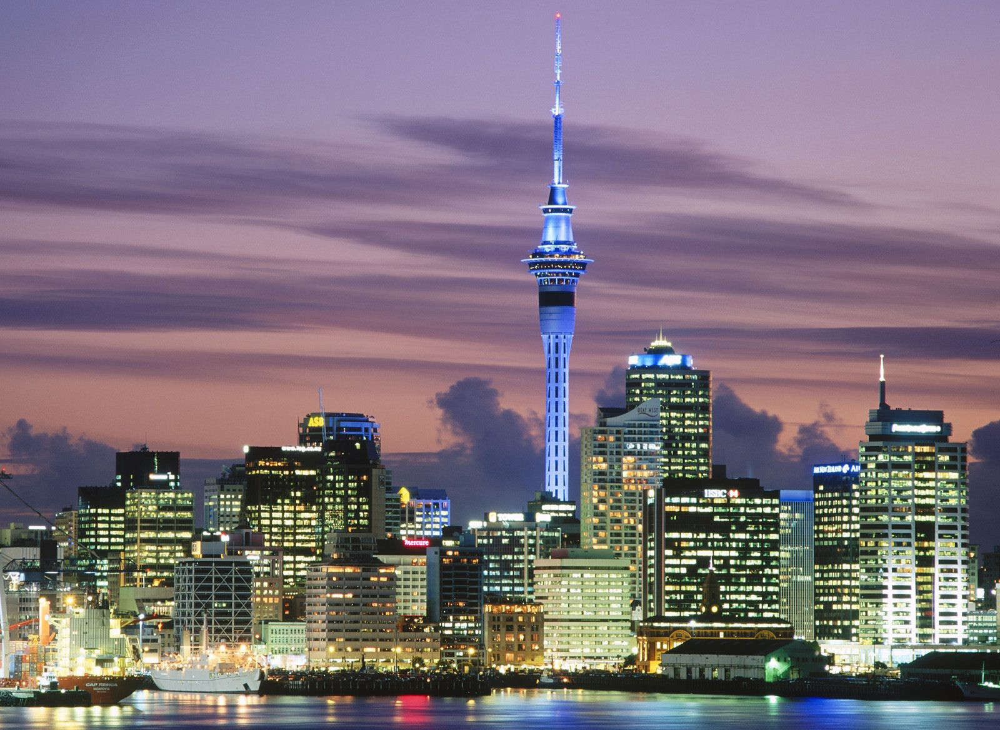
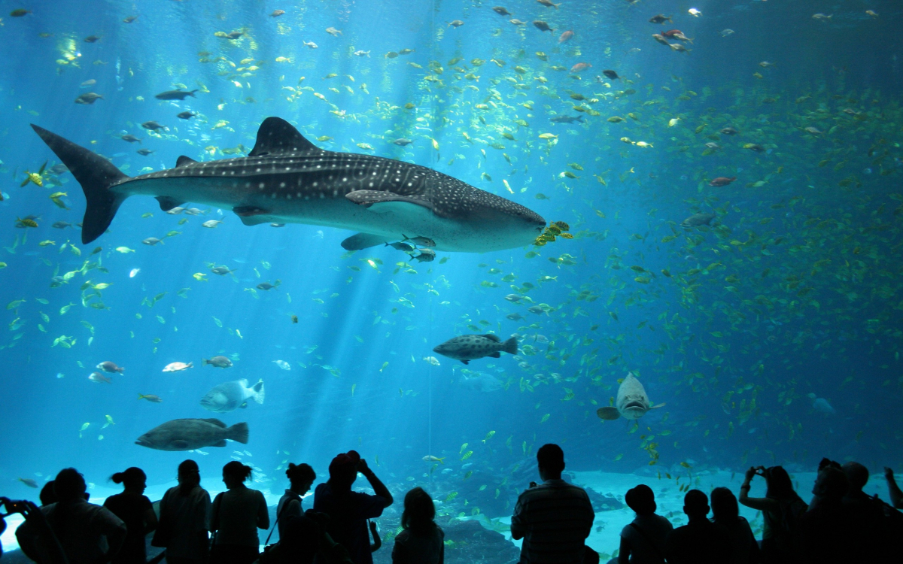
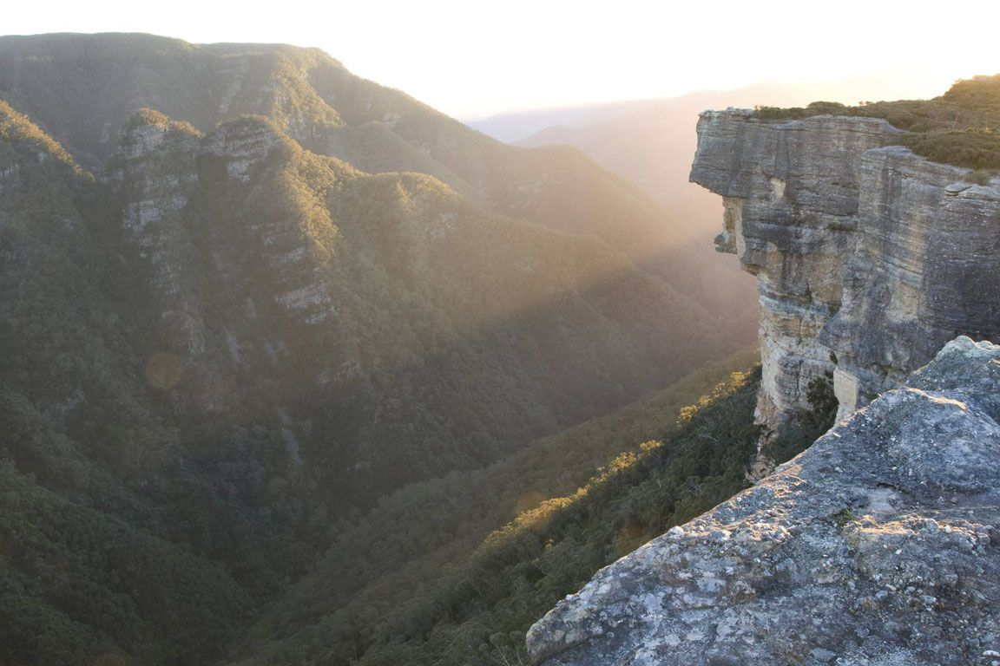

Сиднейский Оперный Театр (Sydney Opera House)

Иднейский оперный театр – одна из самых узнаваемых построек ХХ в. Это выдающееся
многофункциональное сооружение можно считать визитной карточкой города:
именно его чаще всего фотографируют туристы. Сиднейская опера – одно
из наиболее грандиозных чудес архитектуры прошлого века: это не просто
здание, но и произведение искусства. Однако сразу после окончания
строительства у театра насчитывалось не меньше критиков, чем почитателей.
Лондонская “Таймс” отозвалась о театре как о “здании века”, однако
можно было найти и такие характеристики, как, скажем, “француженки-монахини,
играющие в футбол”. Сами жители Сиднея с любовью называют свое чудо
света “монашками, дерущимися за мяч(регби)” или “раковинами устриц”.
Сиднейская Башня

Сиднейская башня (AMP Tower или Centrepoint Tower) – самое высокое здание
в Сиднее и второе в Австралии. Ее высота составляет 309 метров или
1001 фут. Австралийцы называют башню “иглой, пронзающей небеса”.
Телебашня также является второй по высоте смотровой башней во всем Южном полушарии, уступая Скай Тауэр в Окленде, Новой Зеландии. Зато смотровая площадка Сиднейской телебашни находится на 50 м выше, чем у Скай Тауэр, что позволяет с высоты птичьего полета любоваться панорамой огромного города с многочисленными небоскребами, Голубыми Горами, ослепительным океаном и Сиднейской бухтой с ее кораблями.
Телебашня также является второй по высоте смотровой башней во всем Южном полушарии, уступая Скай Тауэр в Окленде, Новой Зеландии. Зато смотровая площадка Сиднейской телебашни находится на 50 м выше, чем у Скай Тауэр, что позволяет с высоты птичьего полета любоваться панорамой огромного города с многочисленными небоскребами, Голубыми Горами, ослепительным океаном и Сиднейской бухтой с ее кораблями.
Сиднейский аквариум (Sydney Aquarium)

Сиднейский Аквариум — одна из главных достопримечательностей Австралии,
расположенная в гавани Дарлинг. Ежегодно его посещают около 1 млн.
человек в год, больше половины которых – гости из-за рубежа.
Аквариум был открыт в Сиднее в 1988 году к торжествам 200-летия Австралии и является одним из крупнейших аквариумов мира. Впечатления, полученные от экскурсии в это уникальное сооружение, запоминаются надолго: только здесь можно за несколько часов познакомиться практически со всеми представителями австралийской фауны и флоры, обитающими в прибрежных водах и пресноводных водоемах континента.
Аквариум был открыт в Сиднее в 1988 году к торжествам 200-летия Австралии и является одним из крупнейших аквариумов мира. Впечатления, полученные от экскурсии в это уникальное сооружение, запоминаются надолго: только здесь можно за несколько часов познакомиться практически со всеми представителями австралийской фауны и флоры, обитающими в прибрежных водах и пресноводных водоемах континента.
Национальный парк «Канангра-Бойд»

Национальный парк «Канангра-Бойд» (Kanangra-Boyd National park) Расположился
в 100 км к западу от Сиднея на территории объекта Всемирного Природного
Наследия ЮНЕСКО «Великие Голубые Горы». Самые известные достопримечательности
национального парка – это 150-метровые водопады Канангра-фоллз и
отвестные Стены Канангра. Последние не раз появлялись в различных
приключенческих фильмах.
На территории парка «Канангра-Бойд» различают два вида ландшафтов – величественное холмистое плато Бойд и местность, изрезанную реками, ущельями и горными хребтами. Плато пересекает дорога Канангра Воллз, поэтому добраться до парка можно как из городка Оберон, так и от знаменитых Дженоланских Пещер. Среди других хорошо известных достопримечательностей парка – гора Клаудмэйкер и острые пики Турат.
На территории парка «Канангра-Бойд» различают два вида ландшафтов – величественное холмистое плато Бойд и местность, изрезанную реками, ущельями и горными хребтами. Плато пересекает дорога Канангра Воллз, поэтому добраться до парка можно как из городка Оберон, так и от знаменитых Дженоланских Пещер. Среди других хорошо известных достопримечательностей парка – гора Клаудмэйкер и острые пики Турат.